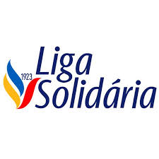

Curso de Administração - É baseado nas rotinas administrativas de escritório com conhecimentos gerais na áreas de RH, Markenting e financeira.
Curso de Cabeleireiro - É baseado nas principais técnicas de corte, tratamento e química para os cabelos. Conta também com noções de atendimento ao cliente e visão empreendedora para os negócios de salão de beleza.
Curso de Gastronomia - É baseado nas principais técnicas de panificação e confeitaria que são tendencias no mercado. Conta também com noções de atendimento ao cliente e visão empreendedora para o negócio de pães e doces.
Curso de TI - Com foco em conhecimentos básicos nas áreas de programação, desenvolvimento de aplicações e soluções de tecnologia.
Em todos os cursos, o aluno terá a oportunidade de desenvolver competências de formação humana para sua vida pessoal, profissional e social. E também desenvolverá competências básicas de empreendedorismo com informática basica, alinhadas com mercado de trabalho anual.
CLIQUE AQUI E INSCREVA-SE JÀ!